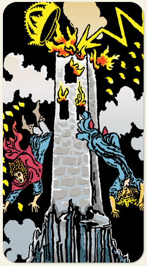

A Torre
Torre precipício, queda fogo raio coroa casal torre.
Positivo: Deixa cair, não tente segurar, saída e término de uma situação ruim, transformação física, dispersão dos elementos, morte é transformação alquímica.
Negativo: Tentar manter a torre de pé, teimosia, cabeça dura, situação irremediável, consequências desastrosas.
Símbolos:
Cores: Cor, Cor, Cor.